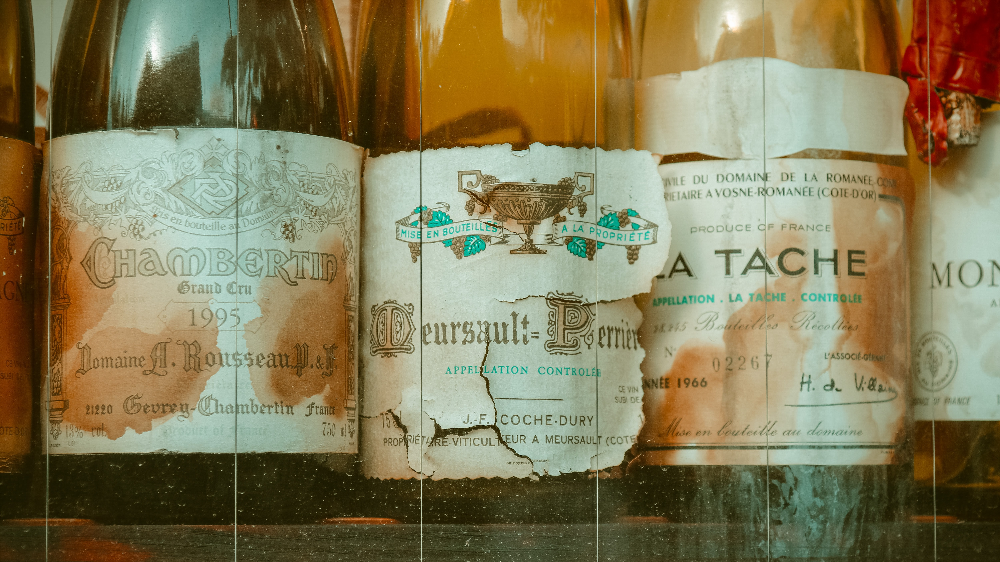

Vintage를 사전에 검색해보면 포도주에 관련된 의미가 많이 나옵니다.
포도주를 살펴보면 이해에 도움이 될 수 있을 텐데요.
포도주는 가치는 얼마나 잘 숙성되는가입니다.
즉, 단순히 오래되었다고 가치가 있는 것이라기보단
처음부터 어떻게 만들어졌고 오랜 기간 얼마나 잘 숙성되었는가에 따라 가치가 다르게 측정됩니다.
정말 제대로 된 빈티지는 시간이 지나도 가치가 떨어지지 않고 오히려 가치가 커집니다.

오리지날 빈티지, 슈퍼 빈티지"
빈티지에서 원본 혹은 가치가 있는 옷들을 지칭합니다.
보통 1990년대 이전 제품들을 말하고 가치에 따라 가격이 달라집니다.
세상엔 수많은 빈티지가 있습니다.그것들에 대해 소개합니다.